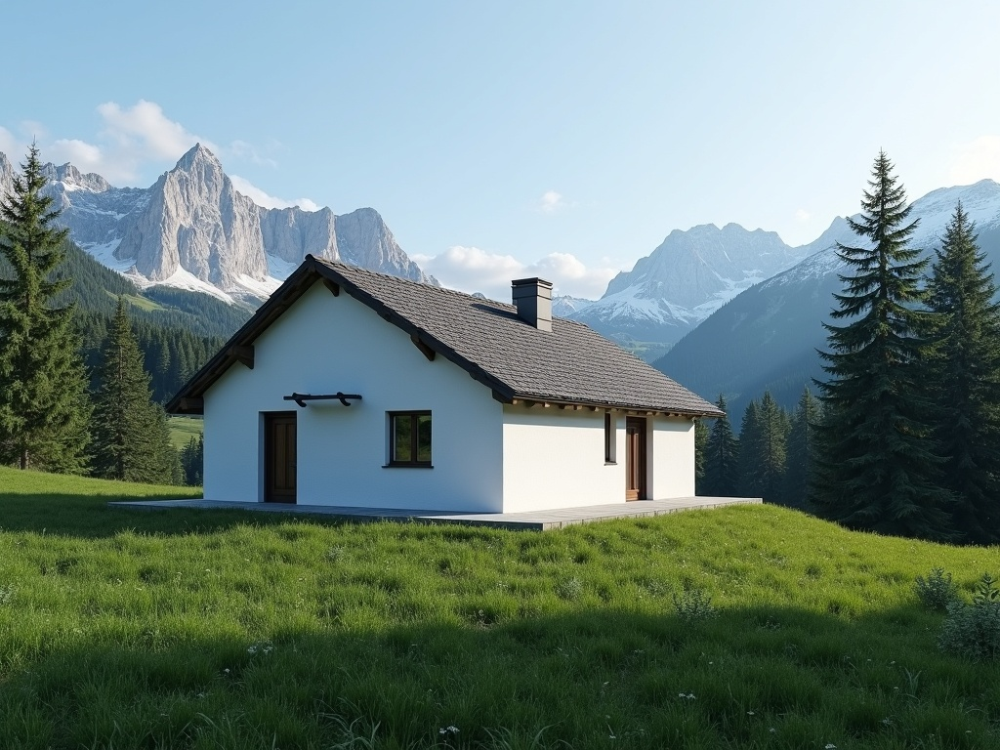
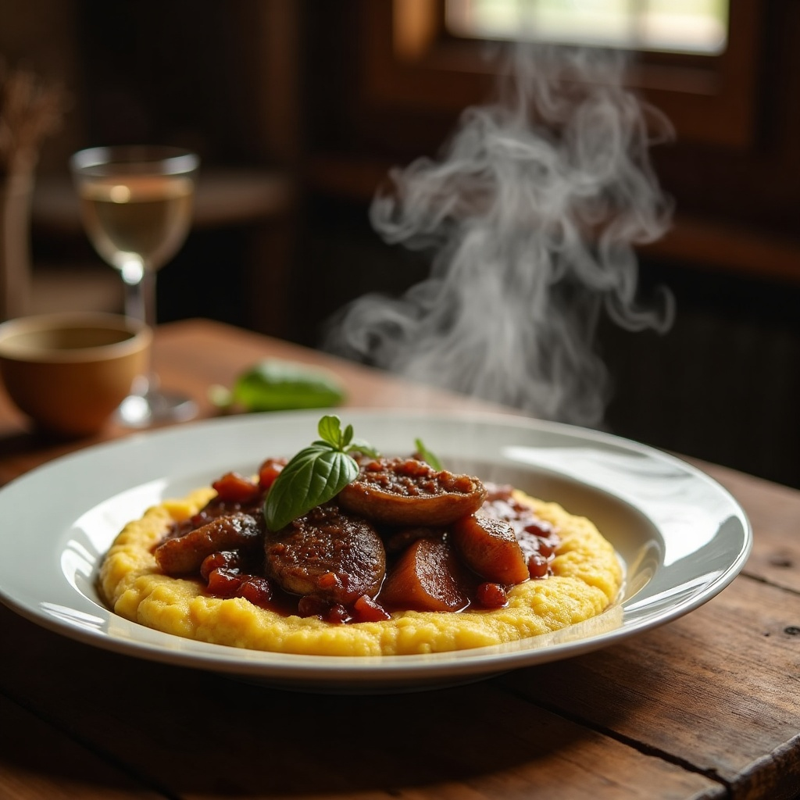
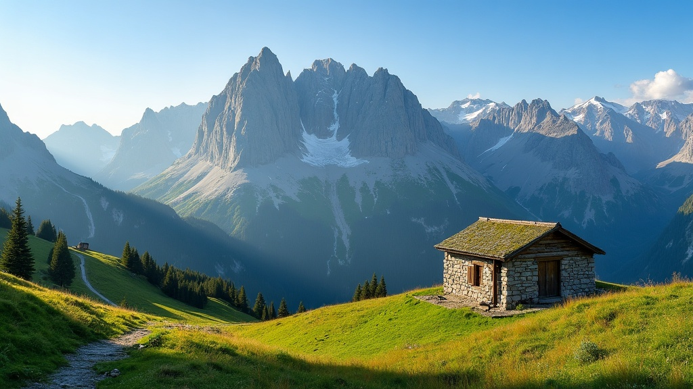
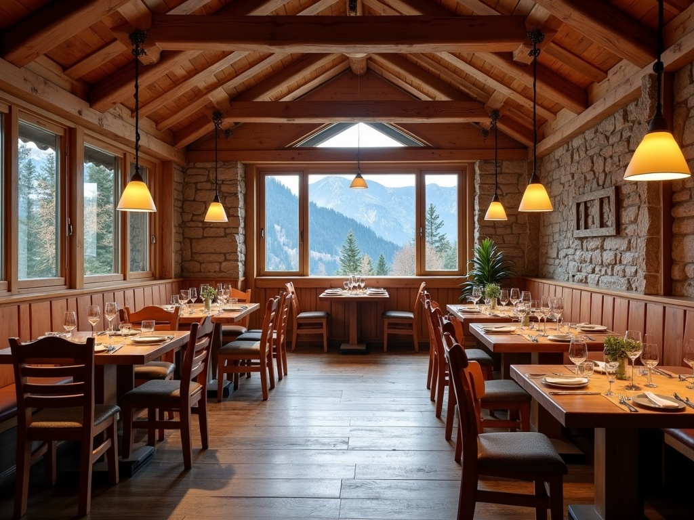
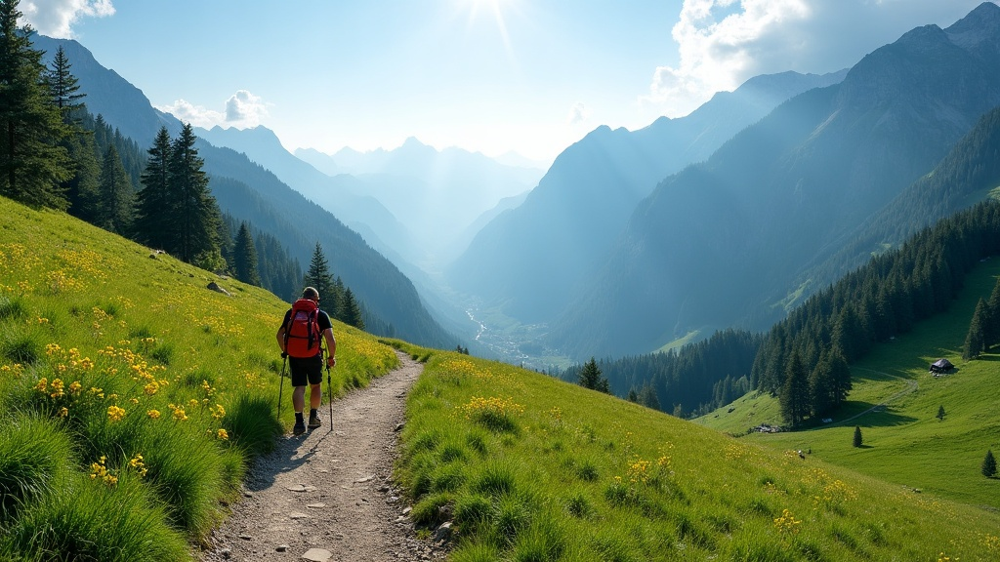
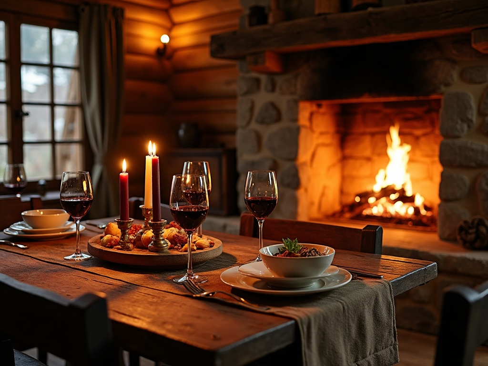

Un rifugio escursionistico immerso nelle Orobie bergamasche: cucina casalinga a km 0, tavolate lunghe e vette a portata di sentiero (o di auto).
Il Rifugio Cespedosio sorge nell'omonima frazione di Camerata Cornello, a 1.100 metri, nel cuore della Valle Brembana. È una gestione familiare: chi arriva trova una cucina che profuma di casa e una sala che accoglie tanto gli escursionisti diretti al Monte Venturosa quanto chi sale in auto solo per pranzare fuori porta.
La sala interna conta 40 posti a sedere, a cui si aggiungono 20 posti all'aperto nelle giornate belle. Sono disponibili 8 posti letto per chi vuole fermarsi a dormire prima di ripartire verso le vette. Struttura accessibile alle persone con disabilità motoria, con copertura GSM, acqua calda e doccia.
✓ Dati verificati su Comune di Camerata Cornello e rifugi.lombardia.it
Menù fisso, stagionale, cucinato come si fa in una casa di montagna: niente à la carte, solo quello che offre la stagione. Acqua, vino, caffè e limoncello della casa sono sempre inclusi.

Il rifugio è raggiungibile sia con una camminata tra bosco e pascoli, sia in auto lungo la Valle Brembana: una comodità rara per un rifugio, adatta anche a chi cerca solo un pranzo fuori porta con vista.
Dalla Statale 470 della Valle Brembana, seguire le indicazioni per Camerata Cornello — Cespedosio (si passa accanto a una cava di marmo lungo il percorso). Parcheggio disponibile presso la struttura.
Punto di partenza consigliato: Chiesa di Camerata Cornello, parcheggio presso il campo sportivo. Sentiero lineare, 4,2 km e +380 m di dislivello, circa 1h 30 di cammino, pendenze mai superiori ai 10°.
Dal rifugio si raggiungono il Monte Venturosa (1.999 m) e il Monte Cancervo (1.803 m). Il sentiero n. 127 porta a Olmo al Brembo; proseguendo sul n. 128 via Baita Maffenoli si arriva a Piazza Brembana.
Baita del Campo e Baite dei Campelli sono mete più semplici, adatte anche a famiglie e camminatori meno allenati.
Immagini generate con intelligenza artificiale, pensate per restituire l'atmosfera reale del luogo — non sono fotografie del rifugio.




📷 Tutte le immagini sono generate con AI (fal.ai) per rappresentare l'atmosfera del luogo, in attesa di un servizio fotografico reale.
Il rifugio apre su richiesta: ti consigliamo di chiamare o scrivere prima di salire, soprattutto in bassa stagione.
Compila il modulo: è una demo, non invia ancora dati — per prenotare davvero chiama o scrivi su Facebook.